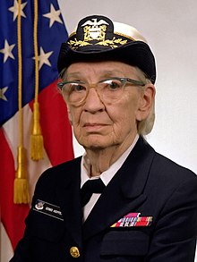

Grace Murray Hopper |
|

Información Personal
|
| Nombre de Nacimiento |
Grace Brewster Murray |
| Apodo |
Amazing Grace |
| Nacimineto |
9 de diciembre de 1906 Nueva York(Estados Unidos) |
| Fallecimiento |
|
Grace Murray Hopper
(Nueva York, 9 de diciembre de 1906 - Condado de Arlington, 1 de enero
de 1992) fue una científica de la computación y militar estadounidense
con grado de contraalmirante. Fue pionera en el mundo de las ciencias de
la computación y la primera programadora que utilizó el Mark I. Entre
las décadas de los 50 y 60 desarrolló el primer compilador para un
lenguaje de programación así como también propició métodos de
validación. 123456 Popularizó la idea de una máquina independiente
de los lenguajes de programación, lo que derivó en el desarrollo de
COBOL, un lenguaje de alto nivel de programación que aún se utiliza.
Hopper intentó alistarse en la marina estadounidense durante la Segunda
Guerra Mundial, pero debió unirse a las reservas de la armada porque ya
tenía 34 años. Era conocida por sus amistades como Amazing Grace
Grace Murray Hopper
(Nueva York, 9 de diciembre de 1906 - Condado de Arlington, 1 de enero
de 1992) fue una científica de la computación y militar estadounidense
con grado de contraalmirante. Fue pionera en el mundo de las ciencias de
la computación y la primera programadora que utilizó el Mark I. Entre
las décadas de los 50 y 60 desarrolló el primer compilador para un
lenguaje de programación así como también propició métodos de
validación. 123456 Popularizó la idea de una máquina independiente
de los lenguajes de programación, lo que derivó en el desarrollo de
COBOL, un lenguaje de alto nivel de programación que aún se utiliza.
Hopper intentó alistarse en la marina estadounidense durante la Segunda
Guerra Mundial, pero debió unirse a las reservas de la armada porque ya
tenía 34 años. Era conocida por sus amistades como Amazing Grace